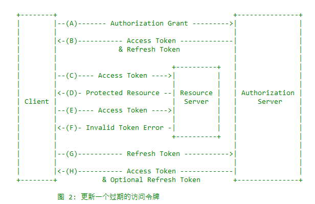

写在前面
这是关于OAuth2.0对应文档的翻译，我会将OAuth2.0的文档在这一系列的博客中都翻译出来，希望自己学习的同时也可以给关注这方面知识的同学一些帮助。
1.介绍
在传统的客户端服务端认证模型中，客户端通过资源拥有者的可信信息来请求一个服务端受保护的资源。为了给第三方程序提供权限访问受限制的资源，资源拥有者会将自己的证书（最常见的就是用户名和密码信息）给第三方程序。这样的做法会带来一些问题和限制：
第三方程序为了以后多次访问受限制的资源，需要存储用户的用户名密码信息。
尽管安全漏洞存在于密码中，服务端依然需要支持密码认证。
第三方程序获得了对保护资源的访问权限，使得资源拥有者无法对有限的资源子集的持续时间和访问进行限制。
资源拥有者如果不撤销所有的第三方程序的权限，就没办法撤销某一个第三方程序的访问权限，而且撤销权限的唯一做法就是更换密码。
任何第三方程序的导致损害将导致最终用户密码的损害以及所有使用该密码保护的数据也收到侵害。
OAuth通过引入授权层和将客户端角色和资源拥有者分开来解决上述问题。在OAuth中，客户端请求获取用户在服务端的资源时，被分发了一系列的认证信息（不是用户的密码）。
不再使用用户的密码去访问受保护的资源，客户端取得了访问令牌（access token）,访问令牌是一个制定了范围、生命周期以及其它访问属性的字符串。访问令牌是通过用户同意之后，由认证服务器分发给第三方程序的。客户端使用访问令牌去访问位于资源服务器的保护资源。
例如，一个用户可以授权打印服务（客户端）一个访问存储在资源服务器上的照片的权限，这个授权是不需要将自己的用户名和密码告诉打印服务的。相反的是，用户通过被照片存储服务信任的服务器直接进行认证，该服务器直接分发给客户端访问令牌。
这一规范使用HTTP被设计出来供大家使用，在使用OAuth使用过程中，如果不是使用HTTP协议都是超出范围的。
OAuth1.0协议（作为一个文档被发布出来）是小规模社区努力的结果。本标准规范建立在OAuth1.0的部署经验和更大的IETF社区提供的附加用例和扩展性需求之上。OAuth2.0协议不向后兼容OAuth1.0协议。这两个版本可能会同时存在网络上，OAuth实现可能会同时支持两个版本。但是，这个强调的意图是新的OAuth的实现要像文档强调的一样支持，OAuth1.0协议只需支持现有的部署。OAuth2.0协议的实现和OAuth1.0的实现基本没有相同的部分，新的实现必须按照文档而不是凭借对OAUth1.0的猜测。
1.1角色
OAuth定义了四个角色:
resource owner(资源拥有者，也就是用户)一个可以授权访问保护资源的实体，当资源拥有者是一个人的话，也就是指最终用户。
resource server(资源服务器)这个服务器存储着受保护的资源，可以使用访问令牌接受和回应对保护资源的请求。
client(客户端，也就是第三方程序)一个代表用户和使用其授权信息来请求受保护资源的程序，”client”并不实现任何的特性（无论程序是在服务器、桌面还是设备上运行）
authorization server(授权服务器)该服务器在成功认证资源拥有者和获取授权信息后会分发访问令牌给客户端。
授权服务器和资源服务器之间的活动已经超越了本规范的范围。授权服务器可能和资源服务器是一台服务器，也可能是分离的。一个授权服务器可以分发多个资源服务器认可的访问令牌。
1.2协议流
如上图所示的OAuth2.0的协议流描述了四个角色之间的活动，包括以下几个步骤：
(A)用户打开客户端以后，客户端要求用户给予授权。
(B)客户端收到授权准许(这是代表资源拥有者授权的证明，一般来讲就是一个授权码)，一般来讲是该规范定义的四种授权类型之一或者扩展的授权类型。授权类型取决于客户端使用请求授权的方法和授权服务器支持的类型。
(C)客户端通过与授权服务器认证和呈送授权准许来请求一个访问令牌。
(D)授权服务器认证客户端和验证授权准许，如果是合法的，将会分发一个访问令牌。
(E)客户端请求位于资源服务器上的保护资源，并且通过访问令牌进行认证。
(F)资源服务器验证访问令牌，如果合法，就会相应其请求。
对于客户端而言，从用户获取授权最好的方法是使用授权服务器作为中介，就像第4.1章中所描述的那样。
1.3授权准许
一个授权准许就是一个代表用户授权的证明（访问其保护资源的权限），客户端用来获取访问令牌。该规范定义了四种授权类型——授权码、implicit、用户密码证书、客户端证书，当然还存在扩展机制来定义附加的类型。
1.3.1授权码
授权码是通过使用授权服务器作为客户端和用户之间的中介来获取的。而不是直接从用户请求授权，客户端指导用户转向授权服务器（一般就是浏览器），在进行授权之后会将用户引导回客户端，并且带着授权码。
在将带着授权码的用户引导回客户端之前，授权服务器认证并取得用户的授权。因为用户和授权服务器进行了认证，用户的密码从来不会被客户端所得到的。
授权码带来了一些比较重要的好处，例如客户端认证的能力，访问令牌的安全传输（不用通过用户的浏览器传输，并且不会将它暴露给其他人包括用户）。
1.3.2 Implicit
隐式授权是一个简化的授权码流，对于使用JavaScript等脚本语言实现的客户端进行了优化。在隐式流中，不用分发给客户端一个授权码，客户端直接会被直接分发给一个访问令牌（就像用户授权的结果一样）。授权类型是隐式的，没有任何的中间的证书会被分发给客户端（例如授权码，直接使用访问令牌）。
当在隐式授权流中分发访问令牌的时候，授权服务器没有认证客户端。在一些情况下，客户端身份可以通过跳转URL（回调URL，也就是携带访问令牌返回客户端的URL）来进行验证。访问令牌可能会暴露给用户或者其他可以访问用户浏览器的程序。
隐式授权提高了一些客户端的响应性和效率（例如一个基于浏览器的客户端，WEBSITE），因为它减少了需要获取访问令牌的往返次数。但是，这种便捷性应该权衡使用隐式授权的安全性实现，例如就像接下来10.3和10.16中所描述的一样，尤其是可以使用授权码的时候。
1.3.3 资源拥有者密码证书
资源拥有者的密码证书（例如，用户名和密码）可以直接作为授权准许使用来获取访问令牌，只有当资源拥有者和客户端高度可信的时候（例如，客户端是设备操作系统的一部分或者高特权程序）并且其他授权类型不可用的时候才会被使用。
尽管这种授权类型需要客户端直接访问用户的证书，用户证书用来一次请求交换访问令牌。这种授权类型可以通过获取一个长时间有效的访问令牌或者更新令牌来消除客户端存储用户证书将来使用的必要。
1.3.4客户端证书
当授权范围限制在客户端控制下的受保护资源时，或者是之前部署到授权服务器的保护资源，客户端证书（或者其他形式的客户端认证信息）可以用来作为一种授权类型。客户端同时也是资源拥有者的时候，客户端证书可以作为授权准许。
1.4访问令牌Access Token
访问令牌是用来访问受保护资源的证书，一个访问令牌就是一个代表分发给客户端授权信息的字符串。这个字符串通常对客户端是不透明的。令牌代表特定的访问范围和访问时间，由用户授权所得，并且由资源服务器和授权服务器执行。
令牌可能表示一个用来表示检索信息的标识符，或者可以以可验证的方式包含授权信息（例如，一个令牌字符串包含一些数据和一个签名）。超出本规范的额外认证信息可能需要客户端使用令牌。
访问令牌提供了一个抽象层，使用一个可以被资源服务器理解的令牌来代替不同的授权结构（例如，用户名和密码）。这种抽象使得分发访问令牌比用来获取令牌的准许更加具有限制性，与此同时资源服务器也不必了解一系列的认证方法。
访问令牌可以有不同的形式、结构、使用方法（例如，加解密属性，这个以资源服务器的安全性需要为基础）。访问令牌属性和用来访问受保护资源的方法是不在本规范的范围之内的。
1.5更新令牌Refresh Token
更新令牌是用来获取访问令牌的认证信息，更新令牌由授权服务器分发给客户端，用来当现有的访问令牌失效或者过期的时候获取一个新的访问令牌，或者去获取一个具有相同范围或者更小范围的额外的访问令牌（和用户相比，访问令牌可能有更短或者更小的权限）。分发更新令牌在授权服务器上是可选的。如果授权服务器分发了一个更新令牌，它会包含在分发访问令牌的同时（例如图一中的D步骤）。
一个更新令牌是一个代表用户给客户端授权的字符串，这个字符串对于客户端也是不透明的。更新令牌表示一个用来检索授权信息的标识符。不像访问令牌一样，更新令牌是只用来在和授权服务器之间使用，并且从来不会发送给资源服务器。

图2的流程图中包含了一下几个步骤:
(A)客户端通过和授权服务器进行认证并传递给它一个授权准许（授权码）来请求一个访问令牌
(B)授权服务器认证客户端，同时验证授权准许（授权码），如果是合法的，就会分发一个访问令牌和一个更新令牌。
(C)客户端向资源服务器请求访问保护资源，同时提供一个访问令牌。
(D)资源服务器验证访问令牌，如果合法，资源服务器就会响应请求
(E)步骤C和步骤D重复执行直到访问令牌过期。如果客户端知道访问令牌过期，将会跳转到步骤G； 否则将会请求别的保护资源
(F)因为访问令牌是非法的，资源服务器返回一个非法令牌错误。
(G)客户端通过提供更新令牌请求一个新的访问密钥。客户端认证需求是以客户端类型和授权服务器政策为基础的。
(H)授权服务器认证客户端，并且验证更新令牌的合法性，如果合法，就会分发一个新的访问令牌（同时，可以选择是否返回一个新的更新令牌）
步骤C、D、E和F是不在本规范的范围之内的，参见第七章。
1.6 TLS版本
每当TLS在本规范中使用的时候，合适的版本总会过一段时间发生变化，在该文档编写的时候，TLS1.2是最新的版本，但是部署非常有限，而且在实现中基本看不到该版本。TLS1.0是最广泛部署的版本，而且提供最广泛的互操作性。
OAuth的实现可能支持额外的传输层安全机制，从而满足安全需求。
1.7 HTTP重定向
该规范广泛使用HTTP重定向，在该规范中，客户端或者授权服务器指导用户的浏览器指向另一个地址。该规范中的例子展示了HTTP状态码302的使用，但是其它的任何可以完成重定向的方法都是被允许的，并且被认为是实现的细节。
1.8 互用性Interoperability
OAuth2.0提供了一个丰富的授权框架，并且具有定义良好的安全属性。但是，作为一个有许多可选组件的丰富且高度可扩展的框架，它本身就可能产生广泛的非互操作实现。
除此之外，该规范留下来一些部分定义或者完全未定义的几个必需组件（例如，客户端注册，授权服务器能力，终端发现）。
没有这些组件，客户端必须手动并助啊们针对特定的授权服务器和资源服务器进行配置，以便进行互操作。
这个框架的设计很明确地表明，未来的工作将定义完成网络规模互操作性所必需的规范性配置文件和扩展。
1.9符号约定
本规范中的关键字”MUST”,”MUST NOT”,”REQUIRED”,”SHALL”,”SHALL NOT”,”SHOULD”,”SHOULD NOT”,”RECOMMENDED”,”MAY”,”OPTIONAL”的解释参见RFC2119。
某些安全相关的术语应该参见RFC4949,这些术语包括但是不限于以下几种：”攻击(ATTCAK)”，”认证(authentication)”，”授权(authorization)”，”证书(certificate)”,”机密性(confidentiality)”，”凭据(credential)”,”加密(encryption)”,”身份(identity)”，”签名(sign)”,”签名(signature)”,”可信(trust)”,”验证(validate)”以及”验证(verify)”.
除非另有说明，所有的协议的参数名称和值都是大小写敏感的。